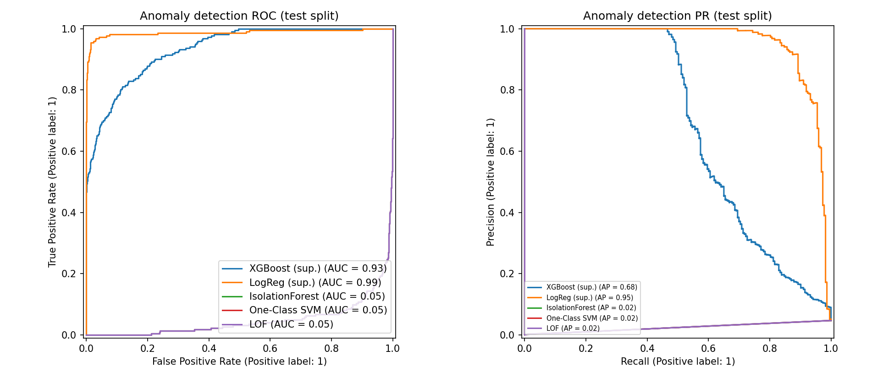
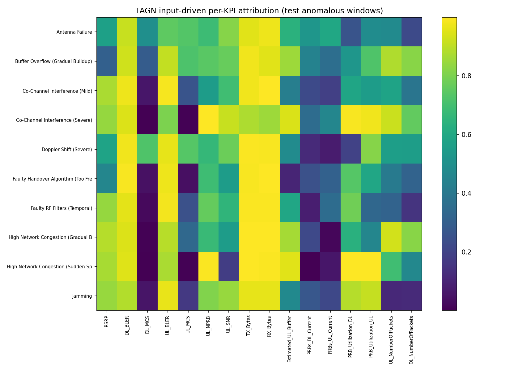
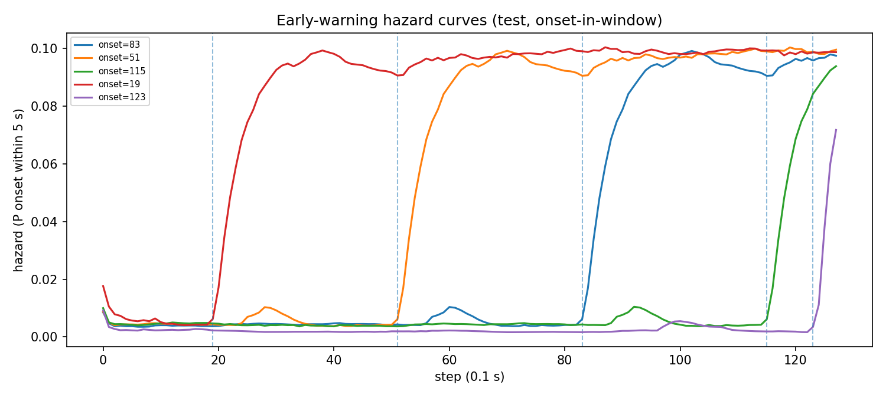
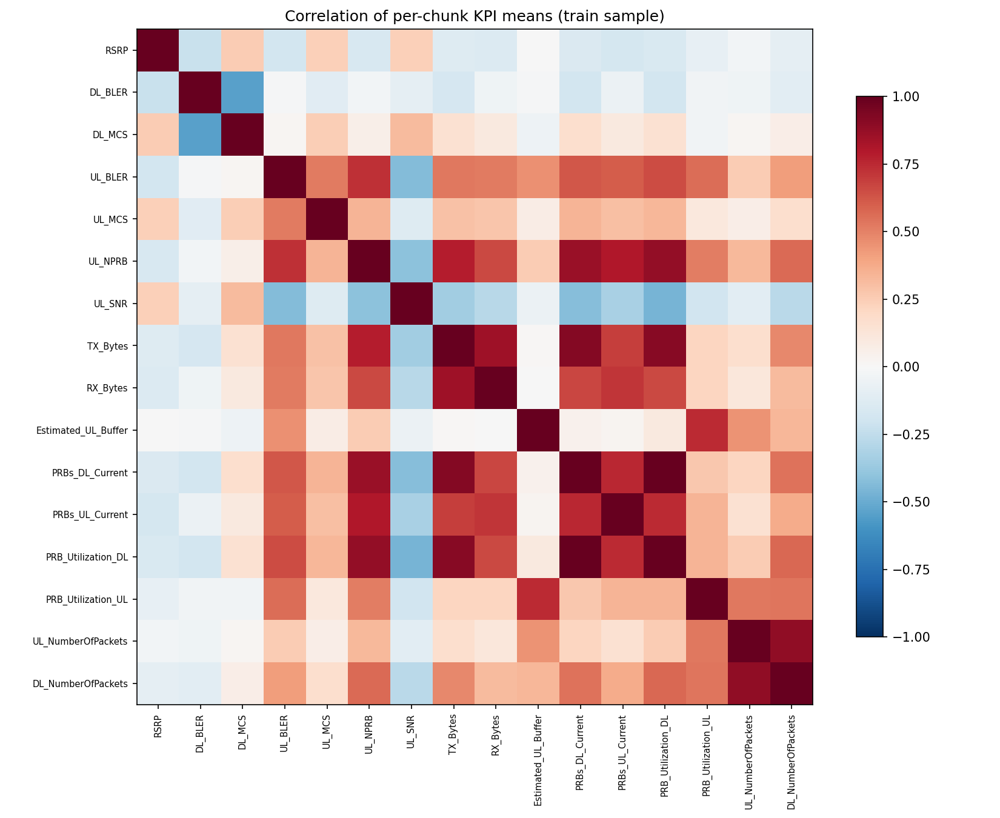

Causal-Temporal Machine Learning for 5G KPI Root-Cause Localization
An evidence-first TelecomTS study combining leakage-controlled evaluation, candidate dynamic KPI graphs, temporal representation learning, and early warning. Built to answer the question that matters: did the model learn transferable failure signatures, or did it memorize the recording?
One pipeline. Four decisions.
This demonstration presents a reproducible framework for anomaly detection, anomaly-type classification, and KPI-level root-cause localization in 5G RAN telemetry. The protocol explicitly audits recording memorization and template shortcuts, reports both chronological and leave-recording-out evaluation, and treats learned graphs as predictive candidates rather than identified causal DAGs. In the completed baseline artifact, logistic regression reaches PR-AUC 0.957 on the chronological test split, while the TAGN pilot reaches 0.574. This gap is reported as a research finding, not concealed as a state-of-the-art claim.
Leakage auditedLORO evaluatedDynamic candidatesEarly warning29 tests passing
The baseline is the result to beat.
PR-AUC is the primary metric because test anomaly prevalence is only 4.7%. The engineered baseline is shown first on purpose.
Chronological test split. Higher is better.
| Model | ROC-AUC | PR-AUC | TPR @ 1% | Reading |
|---|---|---|---|---|
| Logistic regression | 0.986 | 0.957 | 0.951 | strong engineered-feature baseline |
| XGBoost | 0.921 | 0.668 | 0.552 | supervised nonlinear baseline |
| TAGN pilot | 0.886 | 0.574 | 0.480 | pre-TAGN-v2 artifact; rerun required |
A credible paper does not hide a strong baseline. It explains why the proposed model has or has not beaten it.
Does it travel?
Leave-recording-out evaluation blocks the strongest recording-memorization shortcut.
| Metric | Value |
|---|---|
| PR-AUC | 0.606 |
| ROC-AUC | 0.893 |
| Type accuracy | 0.312 |
| RCA template Jaccard | 0.708 |
Does it fool us?
| Audit | Value |
|---|---|
| Recording-prior RCA | 0.818 |
| Input-shift RCA | 0.362 |
| Graph stability | 0.550 |
| Attribution agreement AUC | 0.852 |
Five seeds, honestly reported.
No single lucky run. TAGN is reported as mean ± standard deviation across all five configured seeds; the spread is large and shown, not hidden.
| Seed | ROC-AUC | PR-AUC | Type acc |
|---|---|---|---|
| 42 | 0.886 | 0.574 | 0.247 |
| 123 | 0.936 | 0.841 | 0.592 |
| 2024 | 0.826 | 0.489 | 0.300 |
| 2026 | 0.946 | 0.719 | 0.251 |
| 3407 | 0.888 | 0.615 | 0.614 |
High seed variance is itself a finding: it says the objective is under-determined and motivates the TAGN-v2 training fixes.
What actually carries the signal?
Six variants, identical budget. Removing the graph costs PR-AUC; the static graph variant currently wins, which is an honest and uncomfortable result worth discussing.
| Variant | PR-AUC | ROC-AUC | Type acc | Δ vs full |
|---|---|---|---|---|
| static graph | 0.832 | 0.953 | 0.695 | +0.279 |
| undirected | 0.568 | 0.896 | 0.552 | +0.015 |
| full | 0.553 | 0.884 | 0.229 | -- |
| no graph | 0.522 | 0.834 | 0.377 | -0.032 |
| no nodeconv | 0.510 | 0.837 | 0.215 | -0.044 |
| hazard only | 0.035 | 0.361 | 0.040 | -0.518 |
Does it survive perturbation?
Input noise, channel dropout, time shift, and rescaling applied at inference with the same checkpoint.
| Scenario | PR-AUC | ROC-AUC |
|---|---|---|
| baseline | 0.504 | 0.825 |
| noise 0.05 | 0.504 | 0.825 |
| noise 0.1 | 0.504 | 0.825 |
| noise 0.2 | 0.504 | 0.825 |
| channel drop 0.2 | 0.488 | 0.838 |
| time shift 0.1 | 0.509 | 0.827 |
| scale 0.2 | 0.513 | 0.844 |
Ranking is essentially invariant to input noise; channel dropout is the real stressor.
The study is inspectable.
These are generated artifacts, not decorative mockups. Use them to walk from data shape to benchmark behavior to explanation.

Benchmark discriminationROC and PR curves across supervised and unsupervised baselines.

Root-cause attributionModel attribution compared with template KPI structure.

Early warningPre-onset hazard behavior and warning timing.

Telemetry structureCorrelation structure motivating candidate graph construction.
Warning before the fault, explaining after.
Ambitious, but defensible.
What is genuinely useful
- Shortcut-aware evaluation that makes memorization measurable.
- Candidate dynamic KPI dependencies with held-out audits.
- Joint detection, type, RCA, and early-warning outputs.
- Open artifacts, tests, and a browser-ready demo.
What must happen next
- Rerun TAGN-v2 and the complete experiment matrix.
- Report confidence intervals and per-recording variation.
- Compare only directly compatible published baselines.
- Never call candidate graphs identified causal DAGs.
From browser demo to live dashboard.
For an interactive walkthrough, run the dashboard after showing this page.
streamlit run src/dashboard/app.py
Static demo regeneration: python3 -m src.report.generate_demo